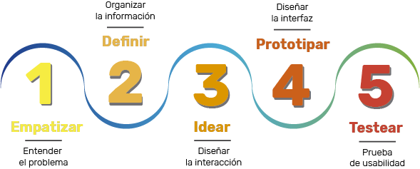
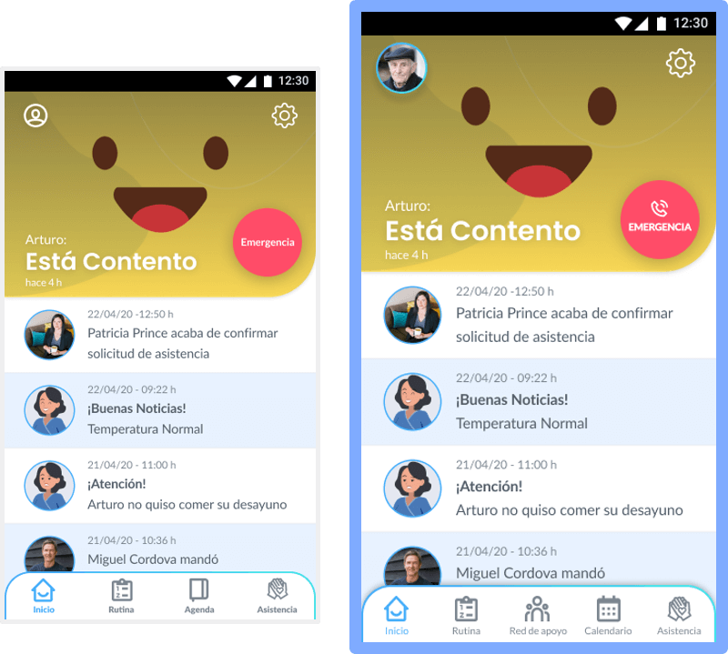
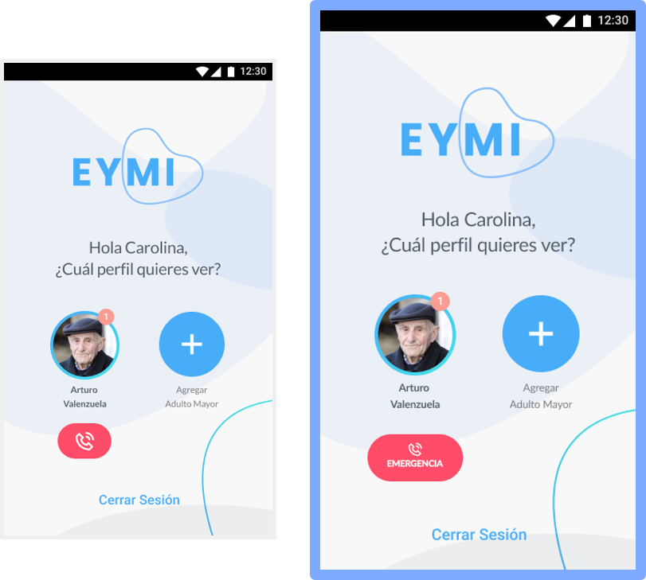

Proyecto:
Eymi app, la plataforma que apoya el cuidado de los adultos mayores.
Descripción:
Eymi app se presenta como una herramienta necesaria para los cuidadores que deben registrar la rutina diaria y mantener contacto con la red de apoyo del adulto mayor.
Objetivo general:
Desarrollar una plataforma que permita registrar el estado de salud de adultos mayores y solicitar asitencia a necesidades que deban suplementarse.
Alcance:
Una plataforma de registro y asistencia para cuidadores de adultos mayores.
Público Objetivo:
Personas e instituciones que atienden adultos mayores y que realizan seguimiento de su estado de salud físico y emocional.
Cliente:
Academia Desafío Latam. Proyecto final para aprobación del curso Diseño UX/UI.
Rol:
Diseñadora UX/UI.
Fecha:
Junio 2020.
Herramientas utilizadas:
- Miro
- Usabilitest.com
- Figma
- Photoshop
Proceso de diseño
1. Entender el problema
En una sociedad que está envejeciendo, es necesario el cuidado de
los adultos mayores para garantizar su calidad de vida.
En Chile, alrededor de 3,5 millones de personas son adultos
mayores, donde el 22% de ellos vive solo
(*).
Los cuidadores o profesionales de salud, se ven cada día
sobrecargados en el proceso de atender a las personas, registrar
las rutinas y el estado de salud en general. También deben
mantener contacto con la red de apoyo del adulto mayor y solicitar
asistencia en casos específicos.
(*)Fuente: Resultados del censo 2017. www.ine.cl
Entrevistas: Insights
Para conocer el público objetivo, se entrevistaron profesionales de salud con experiencia en el cuidado de adultos mayores y a personas que cuidan o apoyan en el cuidado de sus familiares. De ese grupo se desprenden estos insight que describen la rutina del cuidador y su relación con el adulto mayor.
"Cuando un adulto mayor necesita atención diaria es por que está muy solo y corre algún tipo de riesgo de caída o de accidente".
Fabiola Briones, kinesiólogo, magíster en Gerontología. Ha trabajado en residencias de adultos mayores.
“Hay una hoja de registro donde se van anotando todo lo que se le hace al paciente y su desarrollo durante el día".
Sara Yáñez, técnico paramédico. Tiene a cargo la alimentación de un adulto mayor.
"Lo primero es la salud. Si se siente mal emocionalmente (porque son como un niño), llamarla, preguntarle si tomó desayuno, a qué hora almorzó, a qué hora se bañó, cosa muy normal en familia”.
Romina Catalán, cuida a su mamá
Arquetipo

Contexto de vida
Técnico en Enfermería mención en Geriatría de la Universidad
Andrés Bello, no tiene rasgos que la identifiquen con una etnia
en particular. Desde hace más de 10 años está a cargo del
cuidado de adultos mayores, trabaja por turnos, por lo que no
pasa mucho tiempo con su familia.
Vive en Santiago en su departamento con su esposo y su hija,
pero debido a su trabajo se mueve principalmente entre Santiago,
Ñuñoa, Providencia, Las Condes y Maipú. Actualmente, debido a la
pandemia su agencia está implementando tele-asistencia a algunos
de sus pacientes.
Perfil de consumo
Toma constantemente Nescafe Capuccino acompañado por sus
chocolates Costa. Utiliza principalmente ropa deportiva (no se
fija en la marca, sino que le acomode para andar diario) o su
vestimenta de servicio, aunque, aveces sí la ocasión lo amerita
elige algunas prendas de Umbralle o H&M. Le compra ropa a su
hija en Claire's y juguetes Play-Doh.
Cuando llega tarde o los fines de semana le gusta pedir delivery
como rappi o pedidos ya y darse un gusto como NIU Sushi o Holy
Moly.
Perfil conductual
Le gusta escuchar música, ver películas y pasar tiempo con su familia, en especial disfrutar al máximo cada momento con su hija. Se define como una mujer determinada que consigue lo que se propone. Es responsable y cuidadosa, tanto en su vida personal como laboral.
Uso de tecnología
Conoce software y plataformas que le posibilitan una mejor
realización de su trabajo. Por su conocimiento e interés, le es
muy fácil acomodarse a nuevas aplicaciones.
Utiliza su celular para organizar su día a día, labores del
hogar, finanzas y los deberes de su hija, además, se apoya de su
iPad para solucionar pendientes del trabajo y ver videos con su
hija.
Expectativas del servicio
Quiere una aplicación en la que sea fácil encontrar los contenidos y que le permita mantener de manera clara un registro del estado del adulto mayor que pueda enviar a su agencia, además, de tener acceso a la red de apoyo, en caso de necesitar comunicarse con alguien.
2. Organizar la información
Benchmark
El análisis de la competencia fue uno de los aspectos más
importantes, donde concentramos la atención en evaluar la estructura
y la jerarquización del contenido, el contenido en sí mismo y las
funcionalidades de competidores, en este caso, indirectos, puesto
que no existe una aplicación local con las mismas características.
Los competidores seleccionados se identifican como aplicaciones
latinoamericanas que ofrecen funciones similares, pero que en
esencia no abarcan las necesidades de nuestro arquetipo.
El resultado del benchmark nos dio luces para diseñar la aplicacion
con funciones realmente necesarias, aprovechar buenas prácticas que
se repetían en todas como la incorporación de recordatorios a modo
de agenda y un directorio de contacto, a propósito de la importancia
de la red de contacto para los adultos mayores. También nos permitió
evidenciar cuáles contenidos y/o funciones tenían menos importancia
o que podían omitirse.
Cardsorting
Con el interés de organizar el contenido e información de la aplicación, contamos con el apoyo de un grupo integrado por profesionales de salud, especialistas en atención médica y geriátrica, y cuidadores directos de adultos mayores, quienes, basándose en sus conocimientos y experiencia, dieron forma a los espacios donde mejor podría ubicarse el contenido con la distribución de los temas en distintas secciones.

Mapa de Navegación
De esta manera se proyectó la estructura para integrar el contenido y los espacios donde se incorporarían las interacciones. Con ella pudimos evidenciar los niveles en que se puede realizar una función y cómo impacta en la experiencia del usuario.


3. Diseñar la interacción
Flujo de Interacción
La interacción principal, sobre la que se centró la propuesta del proyecto, se trató de la solicitud de asistencia a la red de apoyo del adulto mayor; esto con el interés de garantizar atención oportuna y eficaz que permita favorecer la calidad de vida del adulto mayor. Es por ello que se diseñó un flujo de interacción que deja claro cuáles son las acciones que debe realizar el usuario en la aplicación para cumplir con este objetivo y cuáles son las respuestas que debe ofrecer el producto para garantizar el feedback y buen desempeño.

Wireframe
Una vez planteado el panorama general de cómo debería funcionar Eymi app, se diseñaron los wireframe en los que se ordenaron los elementos y se consideraron cuáles piezas podrían funcionar mejor y si su dimensión y su ubicación eran las correctas. A primera vista, ya se podía notar los primeros rasgos del producto final.

4. Diseñar la interfaz
Moodboard
En esta instancia, se recopiló el espíritu de la marca, a través de los conceptos que a su vez, debe reflejar el producto desde su contenido, pasando por la interacción y finalmente con una interfaz amigable y visualmente agradable para el usuario.
- Compañía
- Amigable
- Cercano
- Asistente
- Comunidad

Branding
Eymi es la traducción de la palabra "Contigo" en Mapundungun. Este es un rasgo en el diseño de la imagen e identidad del producto que nos conecta con lo local, con ser de Chile, y que refleja el caracter solidario que se quiere transmitir la aplicación, al ser una herramienta de apoyo para los cuidadores de adultos mayores.

UI Kit: Colores y tipografía
La paleta de colores que se desprende del buen animo y calma que
transmite el moodboard, tiene acentos que dan la sensación de
calidez y cercanía que se esperaría de la herramienta.
Lo mismo que para la tipogafía se esperába que transmitiera una
sensación de ser amigable y sensible.


UI Kit: Eymi
Con una personalidad amable y directa, Eymi, el personaje que fue diseñado para acompañar al usuario en toda su experiencia en la app y que en la web se convierte en el bot de ayuda del sistema, es justamente la consolidación de la identidad del producto y a través de la cual que se espera atender al usuario y ayudarlo a conseguir sus objetivos utilizando el servicio.

Interfaz
Con todos los recursos gráficos a la mano y con las decisiones tomadas con el wireframe, se diseñó la interfaz de la aplicación y la página web. El resultado ha sido un espacio fresco, ameno e intuitivo. En este prototipo, el usuario realiza inicio de sesión, llamada a la red de apoyo y solicitud de asistencia.

5. Prueba de usabilidad
Un grupo de profesionales de salud con especialización en geriatría y cuidadores de adultos mayores realizaron la prueba de usabilidad, en la que se solicitaron tareas como: identificar a la red de apoyo, identificar el perfil del usuario, hacer una llamada a la red de apoyo y solicitar asistencia.
Una vez realizada la prueba, los resultados dejaron en evidencia que debía modificarse el icono y el rotulado de éste en la sección de Agenda, dado que se prestaba para confusión y no dejaba claro que la función real es de Calendario.
También se modificó la consistencia del botón de llamada en emergencia porque en algunas pantallas aparecía con una forma distinta y se prestaba para confusión con el botón de colgar una llamada.
